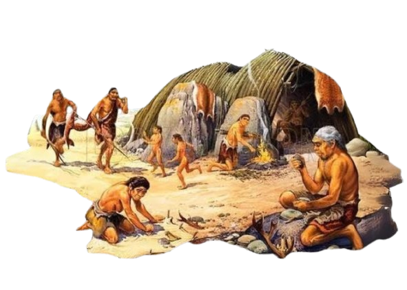
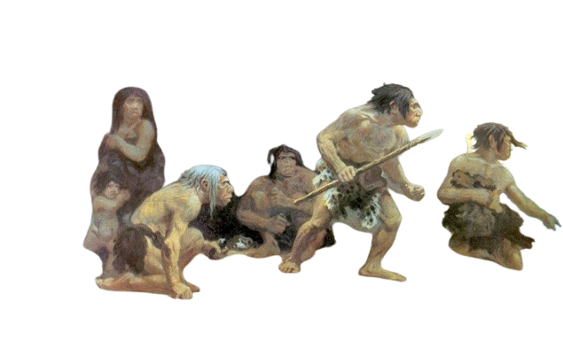
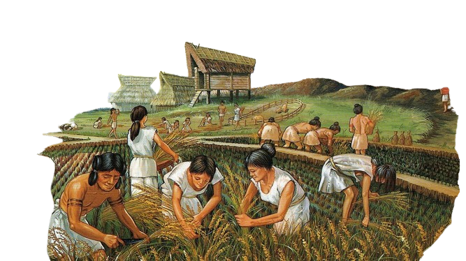
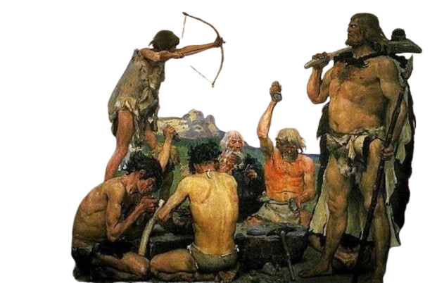
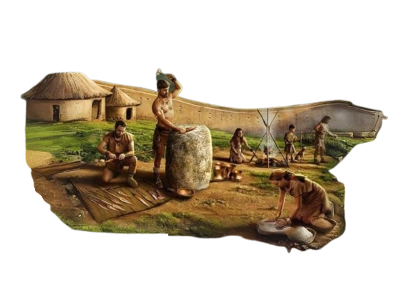
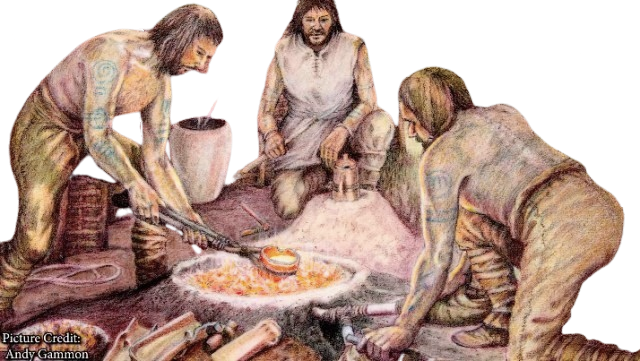

Zaman Paleolitikum (Zaman Batu Tua)
Zaman Paleolitikum, dikenal sebagai Zaman Batu Tua, adalah periode di Indonesia di mana manusia menggunakan alat-alat batu. Berlangsung sekitar 2,5 juta tahun hingga 10.000 tahun yang lalu, manusia hidup sebagai pemburu-pengumpul, menggunakan alat sederhana seperti kapak batu dan alat serpih. Peninggalan Paleolitikum ditemukan di gua-gua dan situs prasejarah di Jawa, Sumatra, dan Sulawesi. Ini membantu pemahaman tentang kehidupan manusia prasejarah, termasuk pola migrasi dan interaksi dengan lingkungan.

Zaman batu tengah (mesolitikum)
Beralih ke zaman batu tengah, di sini peralatan batu yang digunakan oleh manusia purba sudah mulai ada peningkatan. Peralatan batu yang semula masih besar dan kasar kini mulai dimodifikasi oleh manusia purba menjadi lebih halus dan berukuran lebih kecil. Contohnya seperti pebble (kapak Sumatra) dan juga mata panah yang terbuat dari batu.Di masa ini, manusia diyakini sudah mulai hidup menetap. Bukti yang mendukung hal tersebut adalah dengan ditemukannya Kjokkenmoddinger (sampah sisa-sisa makanan seperti kulit kerang) dan juga Abris sous Roche (cerukan atau gua yang digunakan manusia purba sebagai tempat tinggal).

Zaman batu baru (neolitikum)
Zaman Neolitikum di Indonesia, juga dikenal sebagai Zaman Batu Baru, adalah periode di mana manusia mulai mengembangkan pertanian dan peternakan. Berlangsung sekitar 10.000 hingga 4.000 tahun yang lalu, ini ditandai oleh penggunaan alat-alat batu yang lebih maju, seperti batu giling dan mata bor. Manusia mulai menetap dan membangun perkampungan, mengubah gaya hidup dari pemburu-pengumpul menjadi petani dan peternak. Peninggalan Neolitikum ditemukan di situs-situs prasejarah di Indonesia, membantu memahami perubahan sosial dan ekonomi masyarakat prasejarah di wilayah ini.

Zaman batu besar (megalitikum)
Zaman Batu Besar, atau Megalitikum, di Indonesia adalah periode ketika manusia membangun struktur batu besar yang kompleks, seperti situs megalitikum dan kompleks kuburan. Berlangsung sekitar 3.000 hingga 1.500 tahun yang lalu, zaman ini mencerminkan kemajuan sosial dan budaya masyarakat prasejarah. Situs megalitikum yang terkenal termasuk situs Gunung Padang di Jawa Barat dan kompleks kuburan di Nias. Peninggalan ini memberikan wawasan tentang praktik keagamaan, organisasi sosial, dan kehidupan sehari-hari masyarakat prasejarah di Indonesia.

Zaman Perunggu
Pada awalnya, masyarakat di Indonesia menggunakan perunggu yang diperoleh dari paduan tembaga dan timah untuk membuat perkakas dan senjata. Bukti arkeologis menunjukkan bahwa perunggu awal di Indonesia biasanya ditemukan dalam bentuk kendi, perhiasan, alat pertanian, dan senjata seperti tombak dan kapak.

Zaman Besi
Zaman Besi dimulai ketika teknologi pemrosesan besi diperkenalkan di Indonesia. Penggunaan besi secara bertahap menggantikan penggunaan perunggu dalam pembuatan senjata dan perkakas. Zaman ini ditandai dengan munculnya teknologi peleburan dan pembentukan logam besi yang lebih maju. Pada zaman ini, juga terjadi perkembangan budaya dan pertukaran perdagangan yang lebih intensif di kawasan Asia Tenggara, mempengaruhi pola kehidupan dan kebudayaan masyarakat Indonesia.